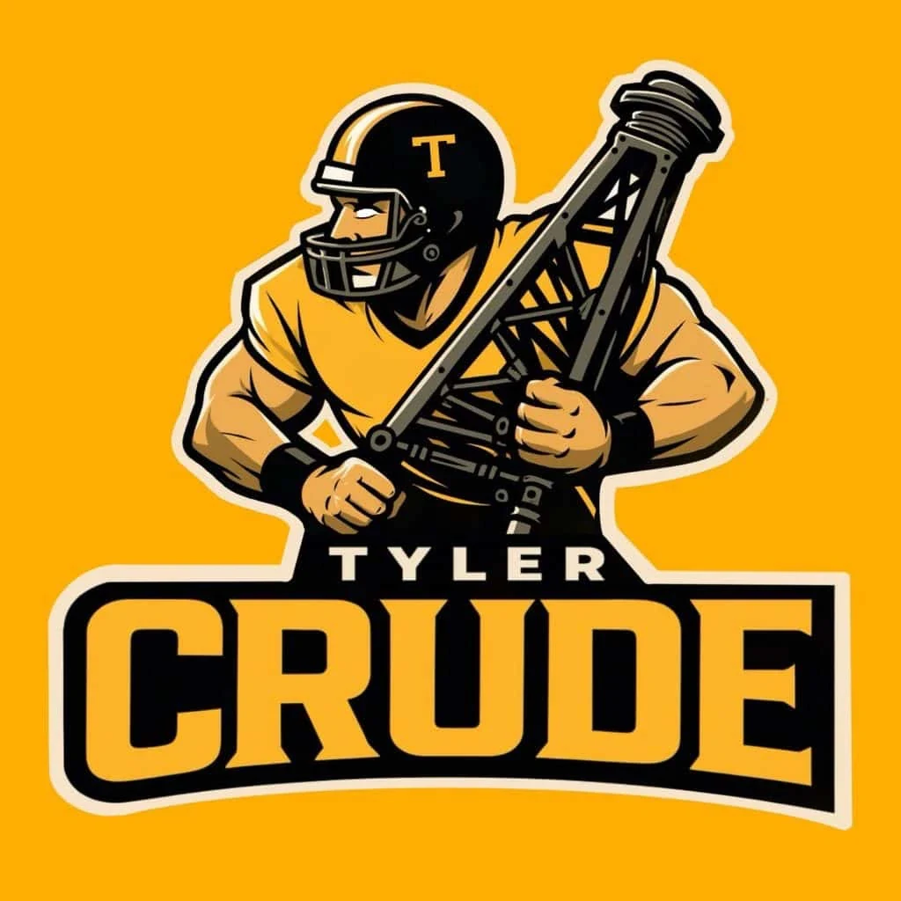
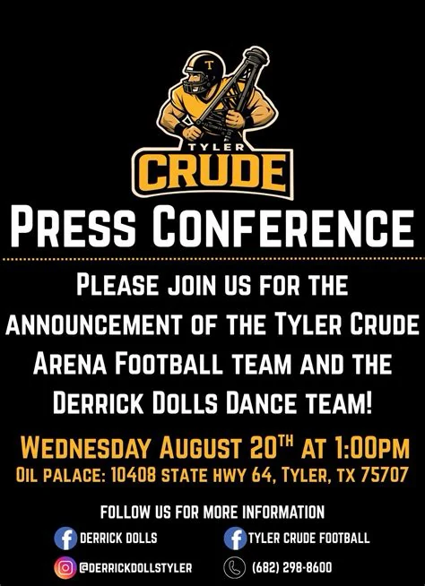
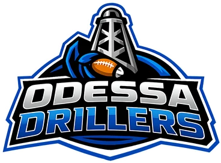
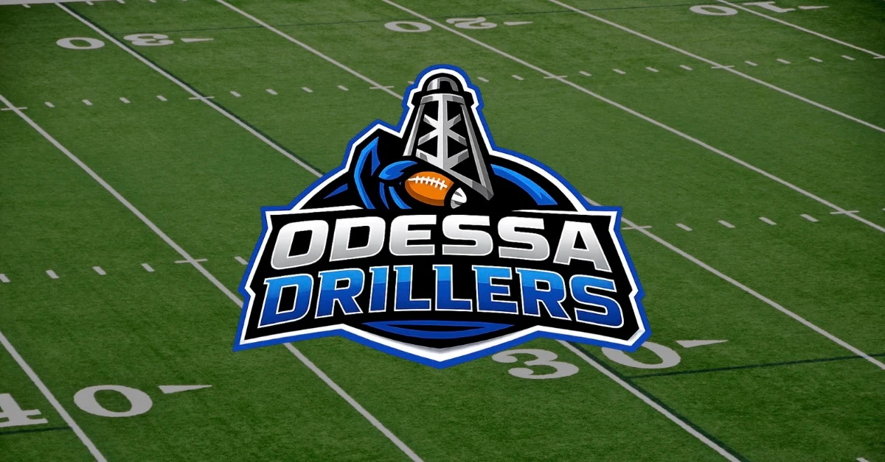
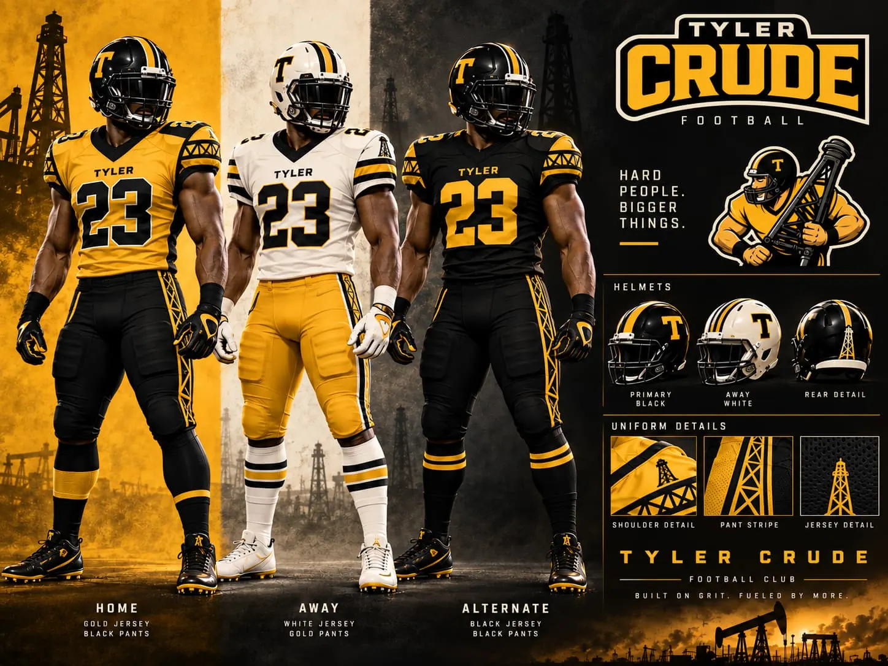

THE TYLER CRUDE
TYLER'S FOOTBALL TEAM THAT NEVER PLAYED
Old School Tyler · Lost Sports · Tyler, Texas · 2025
For a brief moment in 2025, Tyler was getting its own professional indoor football team.
- It had a name.
- It had a logo.
- It had an owner.
- It had a league.
- It had plans to play at the Oil Palace.
There was even a dance team called the Derrick Dolls.
Then, before the Tyler Crude ever played a down, the building that was supposed to make the whole thing possible ran into serious financial trouble.
Within weeks, the football operation behind Tyler's new team was lining up a different arena, about 450 miles away by road, in Odessa.
By October, the Odessa Drillers had appeared. And the Tyler Crude were gone.
The Tyler Crude never lost their first game.
They never got to play it.
2026
Announced as an expansion franchise for American Indoor Football.
Richard Rodgers
Named as the owner in public accounts of American Indoor Football's 2025 expansion.
The Oil Palace
Tyler's longtime arena on State Highway 64, with seating for about 6,960.
0
No confirmed game was ever played under the Tyler Crude name.

The brand. The planned Tyler indoor-football franchise used black, gold and East Texas oil-field imagery: a football player carrying an oil derrick.

The public was invited to the Oil Palace for the announcement of the Tyler Crude arena-football team and the Derrick Dolls dance team.
2025 · The Plan
TYLER WAS GETTING A FOOTBALL TEAM
For most of Tyler's history, following professional football has meant looking somewhere else.
East Texas has produced plenty of football players. High school football is practically part of the landscape. Dallas and Houston have NFL teams. College football is never far away.
But a professional football team actually carrying the Tyler name? That is much rarer.
In 2025, it looked like that was about to change. The new team would be called the Tyler Crude and was being developed for the 2026 American Indoor Football season. Richard Rodgers was identified as the owner. The planned home was the Oil Palace, one of East Texas' most recognizable entertainment venues.
And as minor-league sports names go, the pairing was almost suspiciously perfect.
TYLER CRUDE.
THE OIL PALACE.
EAST TEXAS.
The logo leaned heavily into the theme. Black and gold. An oil derrick. A football player carrying a piece of drilling equipment.
This was not going to be a generic team called the Tyler Thunder or Tyler Storm. The Crude looked like they belonged here.
August 20, 2025
THE TYLER CRUDE GO PUBLIC
A promotional flyer invited the public to the Oil Palace on Wednesday, August 20 at 1:00 PM for the announcement of the Tyler Crude Arena Football Team.
It also introduced the team's dance squad: the Derrick Dolls. The flyer listed the Oil Palace address, social-media accounts and a public telephone number.
In other words, this had progressed beyond someone tossing around an idea. There was a name. There was branding. There was a planned venue. There were public contact details. There was a league. There was a scheduled announcement.
The machinery of a real sports launch had begun.
Unfortunately, the timing could hardly have been worse.
August 19–20, 2025
THEN CAME THE WORST POSSIBLE TIMING
One day before the date printed on the Tyler Crude announcement flyer, news broke that the Oil Palace was in serious financial trouble.
KLTV reported that a lender was seeking to sell the property. The owners had until September 2 to pay about $575,000 on a 2018 loan, or the Oil Palace would go to auction on the steps of the Smith County Courthouse. Events at the venue were already being affected: a September gun show was canceled.
That would have been a major problem for any tenant. For a brand-new football franchise whose entire business model depended on having an indoor arena, it was much worse.
The Crude could have an owner. They could have players. They could have a logo. They could sell sponsorships and tickets.
But without an arena, none of it mattered.
TYLER HAD A FOOTBALL TEAM ON PAPER.
WHAT IT DIDN'T HAVE WAS A SECURE FOOTBALL FIELD.
September 3, 2025
THE LEAGUE MAKES TYLER OFFICIAL
Despite the uncertainty surrounding the Oil Palace, the football project kept moving.
On September 3, 2025, indoor-football coverage broke the news: the Tyler Crude were joining American Indoor Football for the 2026 season.
- Team
- Tyler Crude
- Owner
- Richard Rodgers
- League
- American Indoor Football (AIF)
- Planned season
- 2026
- Planned home
- Oil Palace
- Arena capacity
- About 6,960
For a brief period, Tyler officially appeared on the map of professional indoor football.
But the organization was still at a very early stage. No Tyler roster, head coach or schedule appears in the public record.
The Crude were real. But they were not yet a finished football team. And the arena problem had not gone away.
October 7–9, 2025
ONE ARENA SOLD. ANOTHER TEAM ANNOUNCED.
October 7 is the date when the Tyler Crude story effectively changes direction.
That day, the Oil Palace went to foreclosure auction. The lender, Newtek Small Business Finance, was the highest bidder at:
$4,763,765.26
Oil Palace foreclosure auction · Tyler, Texas
The building that was supposed to become the Tyler Crude's home now belonged to the lender.
Two days later, on October 9, American Indoor Football announced a 2026 expansion team in West Texas: the Odessa Drillers, set to play at Ector County Coliseum.
The building Tyler needed was gone. A different building was lined up in West Texas. And Tyler's football team quietly began to disappear from the picture.
September 30 – December 2, 2025
THEN A PAPER TRAIL APPEARS IN ODESSA
This is where the story becomes much more interesting.
On September 30, 2025, a week before the Oil Palace auction, Indoor Sports United submitted a proposal for football use of Ector County Coliseum in Odessa: Proposal No. 1592, "Indoor Sports United – 2026 Arena Football," covering the 2026 and 2027 seasons. The client listed on the proposal was:
The same person associated with the Tyler Crude. The proposal totaled:
$49,000
Two seasons of football use · Ector County Coliseum · Odessa, Texas
On December 2, 2025, the Ector County Commissioners Court voted 5–0 to approve the deal:
& INDOOR SPORTS UNITED, LLC
The minutes spell out who would be playing there: "The name of the team will be the Odessa Drillers."
That does not necessarily mean American Indoor Football formally declared, "The Tyler Crude are relocating to Odessa." In fact, league coverage was not always consistent about whether Tyler and Odessa were supposed to be separate franchises.
But the business trail is difficult to ignore. While Tyler's arena situation remained unresolved, the person and company connected to the Tyler Crude were arranging a football venue in Odessa.
Follow the Business
DID THE TYLER CRUDE BECOME THE ODESSA DRILLERS?
This is the part of the story where it is worth being precise.
Some reporting treated Tyler and Odessa as though they were separate proposed franchises. In December 2025, OurSports Central noted that "a proposed Southern Division that was to include the Tyler Crude and Odessa (TX) Drillers has not developed." By February 2026, the same report said the Tyler Crude "has disappeared."
So there is no reason to pretend the league left behind a perfectly clean announcement saying the Tyler Crude had officially relocated to Odessa and become the Odessa Drillers.
But the business evidence points strongly toward the same football operation continuing in Odessa:
- Richard Rodgers was associated with the Tyler Crude.
- Richard Rodgers then appeared as the client on the Odessa arena proposal.
- Indoor Sports United, LLC holds the Ector County Coliseum football agreement for the Drillers.
And perhaps the strangest piece of evidence is the team's online ticket shop. Its web address still reads tyler-crude-football. The storefront says Odessa Drillers. But the seller record behind the Drillers' season tickets names the operator as:

The football operation in Odessa moved forward under a new public identity after the Tyler project stalled.
(DBA TYLER CRUDE) 10408 State Hwy 64 · Tyler, TX 75707
That address is not in Odessa. It is the Oil Palace.
That is difficult to explain away. Even after the public team identity had changed to Odessa Drillers, the business infrastructure still carried the Tyler Crude name and the Tyler arena's address.
Taken together, the best-supported interpretation is that the football operation originally being developed for Tyler shifted to Odessa and continued there under the Odessa Drillers identity, even though league communications did not always describe it as a formal relocation.
TYLER HAD THE LOGO.
ODESSA GOT THE FIELD.

The football operation associated with the Tyler project found its field in Odessa.
The Tyler Crude had planned to bring indoor football to the Oil Palace: a field, goalposts, boards around the playing surface, and fans sitting close enough to the action to practically become part of it.
Instead, the football operation associated with the project found a home in Odessa.
48 Days
HOW FAST DID IT ALL HAPPEN?
- August 19, 2025
Oil Palace financial trouble becomes public
The Crude's planned home is facing an uncertain future.
- August 20, 2025
Tyler Crude announcement advertised
The public is invited to the Oil Palace for the announcement of Tyler's new arena-football team.
- September 3, 2025
AIF recognizes the Tyler Crude
Tyler becomes an announced American Indoor Football expansion market.
- September 30, 2025
Odessa proposal submitted
Indoor Sports United, with Richard Rodgers as client, proposes football use of Ector County Coliseum.
- October 7, 2025
Oil Palace sold at auction
The planned Tyler venue changes hands.
- October 9, 2025
Odessa Drillers announced
American Indoor Football names a 2026 expansion team at Ector County Coliseum.
- December 2, 2025
Ector County approves the football agreement
The Coliseum's agreement is with Indoor Sports United, LLC. The team: the Odessa Drillers.
- February 2026
"The Tyler Crude has disappeared"
League coverage notes the Tyler team is gone. Odessa plays on.
The Evidence
HOW FAR DID THE TYLER CRUDE ACTUALLY GET?
The Tyler Crude occupied an unusual place somewhere between a sports concept and a functioning professional team.
Good evidence for
- A team name
- A logo
- An owner
- League recognition
- A planned arena
- An announcement flyer
- Public contact information
- An operating company associated with the project
Little or no good evidence of
- A completed Tyler roster
- A confirmed Tyler head coach
- A finished Tyler schedule
- An official Tyler field design
- Official Tyler game uniforms
- A Tyler home opener
- A game played under the Tyler Crude name
That distinction matters. The Tyler Crude did not play a season and fold. They did not finish 2–10. They did not suffer from poor attendance. They did not run out of fans.
They failed to reach the point where any of those things could happen.
MORE REAL THAN A CONCEPT.
LESS THAN A SEASON.
What Could Have Been
WHAT WOULD THE TYLER CRUDE HAVE LOOKED LIKE?
Because the Crude never reached the field in Tyler, we never got to see what a completed team identity might have looked like on game day. There does not appear to be a surviving official Tyler Crude uniform set.
But the real branding gives us plenty of clues. Black. Gold. White. Oil derricks. Industrial lines. A simple gold T on the helmet.
Using those elements, this concept imagines three possible uniforms for the team Tyler never got to see.

CONCEPT ART: These uniforms are a modern speculative design created for this Old School Tyler story. They were not official Tyler Crude uniforms.
Epilogue
THE STORY GOT EVEN WEIRDER
The Tyler connection was not the end of the strange story. The Odessa Drillers actually made it onto the field in 2026. But even that operation had an unusual path. The southern AIF division it was supposed to join never formed, so the Drillers played an independent schedule.
As the Kentucky Barrels overhauled their roster late in the 2026 season, players from the Odessa Drillers were brought in to help fill out the Barrels' lineup. In Kentucky's July regular-season finale, defensive back TJ Samuel, picked up from the Drillers, had two interceptions.
Later that summer, an Odessa Drillers social-media account appeared under Wyoming Wranglers branding. The Drillers said another account had been hacked and denied that the franchise was relocating to Wyoming. Independent reporting confirming exactly what happened is limited.
By October 2026, the Drillers' own website, odessadrillers.com, had lapsed into a parked domain. The ticket shop still carrying the Tyler name outlived it.
So the trail that started with a never-played football team in Tyler eventually included Odessa, borrowed players in Kentucky, a social-media account suddenly advertising football in Wyoming and a website that went dark.
Minor-league indoor football is rarely boring.
Why It Matters
TYLER NEVER GOT TO DECIDE
Perhaps the most important part of the story is what didn't happen.
Tyler did not reject indoor football. There was no disastrous opening night. There were no empty stands proving East Texans were uninterested. There was no terrible record. There was no final home game.
There was never a first home game.
The Oil Palace problem developed while the franchise was still being built, and the organization found another path before Tyler could ever find out whether indoor football would work here.
That means the unanswered question remains: would Tyler have supported the Tyler Crude? Nobody knows. And there is no attendance number that can answer it.
The experiment ended before the experiment started.
THE TYLER CRUDE DIDN'T LOSE THEIR FIRST GAME.
THEY NEVER GOT TO PLAY IT.
The Through-Line
A TEAM THAT EXISTS MOSTLY IN ARTIFACTS
That may be what makes the Tyler Crude worth remembering.
Most failed sports teams leave behind statistics. Wins. Losses. Players. Coaches. Schedules. Ticket stubs. Programs. Maybe even a championship banner.
The Tyler Crude left something much stranger:
- A logo
- A press-conference flyer
- League references
- County documents
- A business trail leading west
- A ticketing system that still remembered the Tyler name
- Zero games played in Tyler
They existed long enough to leave evidence behind, but not long enough to leave statistics.
For a few weeks in 2025, Tyler was going to have a professional football team.
Almost.
Sources & Research Notes
WHERE THE STORY COMES FROM
This Old School Tyler entry was assembled from surviving Tyler Crude promotional material, contemporary East Texas reporting, indoor-football coverage, county records and the ticketing account connected to the later Odessa operation.
- Tyler Crude promotional materialThe surviving Tyler Crude logo and August 20, 2025 press-conference flyer document the team's branding, proposed Oil Palace location and Derrick Dolls dance team.
- STWF Sports — "Tyler Crude Football Coming For 2026" (August 15, 2025)The August 20 press conference at the Oil Palace and the Derrick Dolls dance team.
- KLTV — "Tyler Oil Palace threatened for auction" (August 19, 2025)The $575,000 loan balance, the September 2 deadline and canceled events.
- CBS19 — "Oil Palace in Tyler faces auction as lender seeks trusteeship change" (August 19, 2025)
- Inside the Arena on X — Tyler Crude joining American Indoor Football (September 3, 2025)
- KLTV — "Tyler Oil Palace bought by lender at auction" (October 7, 2025)Newtek Small Business Finance's winning bid of $4,763,765.26.
- Odessa American — "Ector County preps for new indoor football team" (December 1, 2025)The October 9 AIF announcement of the Odessa Drillers at Ector County Coliseum.
- Ector County Commissioners Court — Minutes, December 2, 2025 (PDF)Approval of the Football Use Permit Agreement between Ector County Coliseum and Indoor Sports United, LLC.
- OurSports Central — Weekly Sports League and Franchise Report (December 22, 2025)The proposed Southern Division with the Tyler Crude and Odessa Drillers "has not developed."
- OurSports Central — Weekly Sports League and Franchise Report (February 2, 2026)The Tyler Crude "has disappeared"; the Drillers play an independent schedule.
- Ector County Coliseum — Proposal No. 1592, "Indoor Sports United – 2026 Arena Football" (September 30, 2025)Client Richard Rodgers; $49,000; football use for the 2026 and 2027 seasons. Part of the December 2, 2025 Commissioners Court agenda packet.
- Vivenu — Odessa Drillers 2026 season tickets (tyler-crude-football ticket shop)Seller record: "Indoor Sports United LLC (dba Tyler Crude)," 10408 State Hwy 64, Tyler, TX 75707. Checked October 7, 2026.
- Verticality Sports — "New-Look Barrels Struggle in Regular Season Finale" (July 12, 2026)TJ Samuel, "picked up from the Odessa Drillers," in Kentucky's roster shakeup.
- Wikipedia — Odessa DrillersOwnership, the 2026 season and the Drillers' July 2026 statement about a hacked account. Wikipedia flags this article as relying on primary sources.
FAQ
FREQUENTLY ASKED QUESTIONS
Yes. The Tyler Crude were a real planned professional indoor-football franchise recognized by American Indoor Football for the 2026 season. The project never progressed far enough to play a game in Tyler.
Public accounts of American Indoor Football's 2025 expansion name Richard Rodgers as the owner.
The team planned to play at the Oil Palace in Tyler, Texas.
The Oil Palace entered serious financial trouble while the franchise was being organized. The Tyler operation did not secure the arena arrangement it needed, and the Oil Palace was eventually sold at foreclosure auction in October 2025.
There is strong evidence connecting the two operations.
Richard Rodgers was associated with the Tyler Crude and was later listed as the client on the Ector County Coliseum football proposal. Indoor Sports United, LLC holds the Coliseum agreement for the Odessa Drillers, and the Drillers' ticket seller record names the operator as "Indoor Sports United LLC (dba Tyler Crude)" at the Oil Palace's Tyler address.
However, contemporary league communications did not consistently describe the transition as a formal relocation. The safest conclusion is that the football operation being developed for Tyler appears to have shifted to Odessa and continued there under the Odessa Drillers identity.
No complete confirmed Tyler Crude roster has been found. Contemporary coverage from the period suggests the organization was still assembling basic football operations.
No confirmed game was played under the Tyler Crude name.
No. The uniform artwork shown on this page is a modern speculative concept inspired by the team's actual logo, colors and oil-field branding.
The evidence does not support describing the Odessa Drillers as having relocated to Wyoming. The Drillers said a social-media account had been hacked and denied that the franchise was relocating to Wyoming. Independent reporting confirming exactly what happened is limited.
More forgotten logos, lost teams, unusual places and pieces of Tyler history that deserve another look. See also UT Tyler's Lost Logos and the Tyler WildCatters.